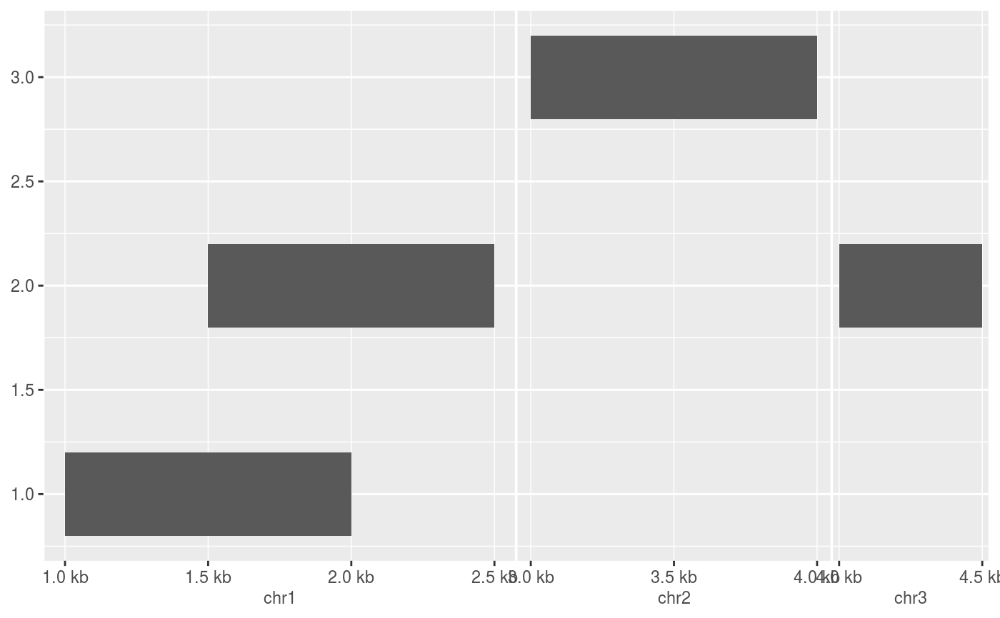

scale_x_genomic() and scale_y_genomic() are the
default scales for x and y aesthetics defined as representations of genomic
positions such as GPos and GRanges
(sub)-classes.
scale_x_genomic( name = waiver(), breaks = waiver(), minor_breaks = waiver(), n.breaks = NULL, labels = waiver(), minor_labels = waiver(), limits = NULL, expand = waiver(), oob = censorThis, na.value = NA_real_, trans = S4TransIdentity, guide = "genomic_axis", position = "bottom", sec.axis = waiver() ) scale_y_genomic( name = waiver(), breaks = waiver(), minor_breaks = waiver(), n.breaks = NULL, labels = waiver(), minor_labels = waiver(), limits = NULL, expand = waiver(), oob = censorThis, na.value = NA_real_, trans = S4TransIdentity, guide = "genomic_axis", position = "left", sec.axis = waiver() )
Arguments
| name | The name of the scale. Used as the axis or legend title. If
|
|---|---|
| breaks | One of:
|
| minor_breaks | One of:
|
| n.breaks | An integer guiding the number of major breaks. The algorithm
may choose a slightly different number to ensure nice break labels. Will
only have an effect if |
| labels | One of:
|
| minor_labels | One of:
Keep in mind that displaying the minor labels is dependent on wether the
|
| limits | One of:
Note that by default, setting limits on positional
scales will remove data outside of the limits. Change the
|
| expand | For position scales, a vector of range expansion constants used to add some
padding around the data to ensure that they are placed some distance
away from the axes. Use the convenience function |
| oob | One of:
|
| na.value | Missing values will be replaced with this value. |
| trans | For continuous scales, the name of a transformation object or the object itself. Built-in transformations include "asn", "atanh", "boxcox", "date", "exp", "hms", "identity", "log", "log10", "log1p", "log2", "logit", "modulus", "probability", "probit", "pseudo_log", "reciprocal", "reverse", "sqrt" and "time". A transformation object bundles together a transform, its inverse,
and methods for generating breaks and labels. Transformation objects
are defined in the scales package, and are called |
| guide | A function used to create a guide or its name. See
|
| position | For position scales, The position of the axis.
|
| sec.axis |
|
Value
A ScaleS4 ggproto object.
Details
It is important to note that the scale operates in genomic space
when limits are defined as or inferred to be of the GRanges class.
This has the following known consequences:
Data represented by unclassed numerical values can not be used on this scale.
The scale limits and breaks are represented by
GRangesandGPosobjects.
Furthermore, scale expansions as set through the expand argument,
expand the scale limits per individual seqlevel.
See also
Examples
require(GenomicRanges) df <- DataFrame( x = GRanges(c("chr1:1000-2000", "chr1:1500-2500", "chr2:3000-4000", "chr3:4000-4500")), y = c(1, 2, 3, 2) ) # The default scale for GenomicRanges is scale_(x|y)_genomic() g <- ggplot(df, aes(xmin = x, xmax = x, ymin = y - 0.2, ymax = y + 0.2)) + geom_rect() g# Major labels are parallel to the seqnames g + scale_x_genomic(labels = LETTERS[1:3])# Minor breaks are positional and specified with GPos or 1-width GRanges g + scale_x_genomic( minor_breaks = GPos(c("chr1:2000", "chr2:3500", "chr3:4000")) )# Minor breaks can also be labelled g + scale_x_genomic( minor_breaks = GPos(c("chr1:2000", "chr2:3500", "chr3:4000")), minor_labels = LETTERS[1:3] )